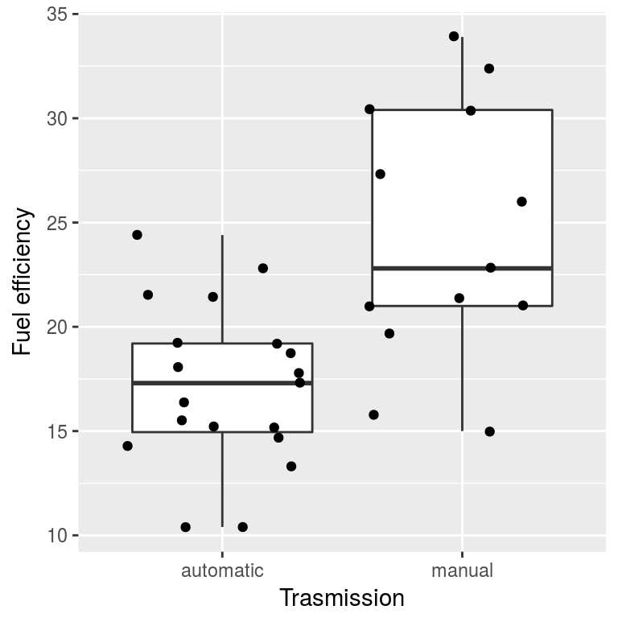
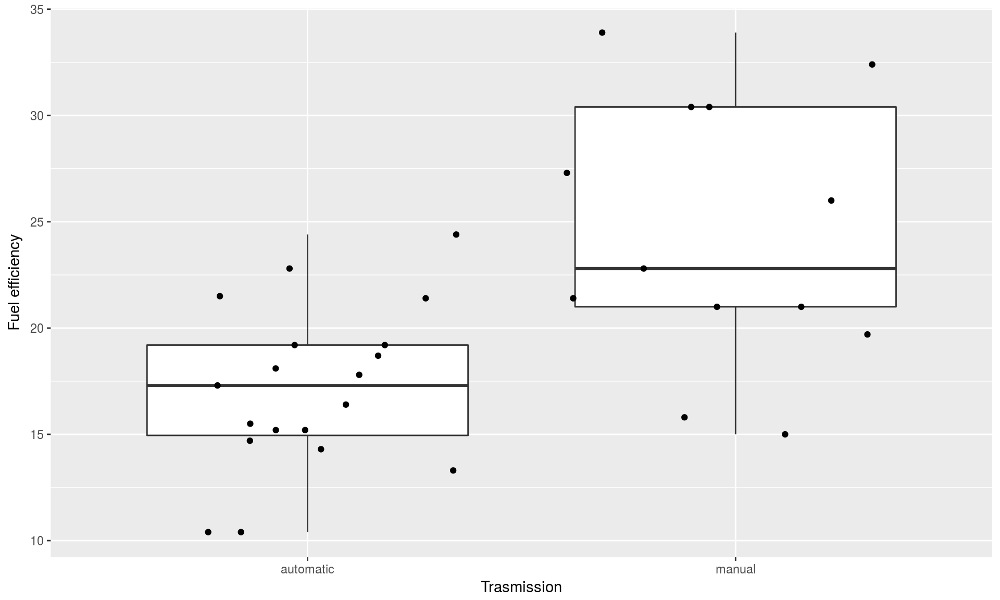
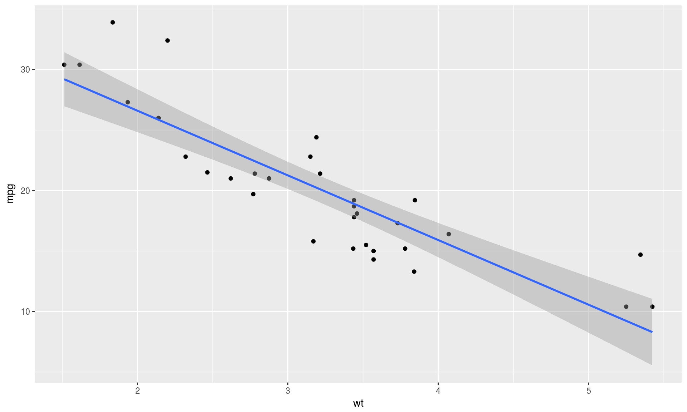
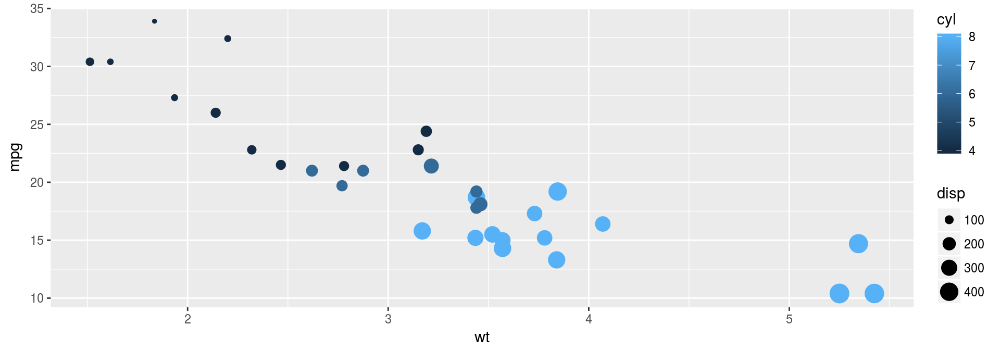

Lecture 6: Hypothesis testing and Linear Regression
October 19, 2017
Relevant Books
For more background in statistics check out the following books:
“An introduction to Statistical Learning” [ESL] by James, Witten, Hastie and Tibshirani
“Elements of statistical learning” [ISL] by Hastie, Tibshirani and Friedman
“Introduction to Linear Regression Analysis” by Montgomery, Peck, Vinning
When do you need a model?
When you want to:
- detect patterns in the data,
- predict outcomes for new observations,
- assess the significance of a factor on the outcome,
- perform statistical tests
Hypothesis testing
Hypothesis testing
- Is a significant difference between two groups of observations?
- e.g. in medical a study, did the treatment group have better outcomes than a control group?
- The hypotheses can be tested with statistical procedures.
Student’s t-test
- William Gosset (1908), a chemist at the Guiness brewery.
- Published in Biometrika under a pseudonym Student.
- Used to monitor the quality of stouts.
- Now one of the standard/traditional methods to test the equality of the means of two populations.
Dataset
- A built-in dataset,
mtcars, that comes from a 1974 issue of Motor Trends magazine.
data("mtcars")
head(mtcars)## mpg cyl disp hp drat wt qsec vs am gear carb
## Mazda RX4 21.0 6 160 110 3.90 2.620 16.46 0 1 4 4
## Mazda RX4 Wag 21.0 6 160 110 3.90 2.875 17.02 0 1 4 4
## Datsun 710 22.8 4 108 93 3.85 2.320 18.61 1 1 4 1
## Hornet 4 Drive 21.4 6 258 110 3.08 3.215 19.44 1 0 3 1
## Hornet Sportabout 18.7 8 360 175 3.15 3.440 17.02 0 0 3 2
## Valiant 18.1 6 225 105 2.76 3.460 20.22 1 0 3 1- rows correspond to car models,
- column are car attributes: miles per gallon, number of cylinders, displacement, transmission etc.
Testing equality of mpg
Is the fuel efficiency (mpg) the same for the cars with automatic and manual transmission?
Test the null hypothesis:
\[H_0: \text{mean mpg of automatic cars = mean mpg of manual cars}\]
Convert the column am (transmission) to a factor:
# convert am (0 = automatic, 1 = manual) column to a factor
mtcars$am <- factor(mtcars$am, levels = c(0, 1),
labels = c("automatic", "manual"))
head(mtcars)## mpg cyl disp hp drat wt qsec vs am gear
## Mazda RX4 21.0 6 160 110 3.90 2.620 16.46 0 manual 4
## Mazda RX4 Wag 21.0 6 160 110 3.90 2.875 17.02 0 manual 4
## Datsun 710 22.8 4 108 93 3.85 2.320 18.61 1 manual 4
## Hornet 4 Drive 21.4 6 258 110 3.08 3.215 19.44 1 automatic 3
## Hornet Sportabout 18.7 8 360 175 3.15 3.440 17.02 0 automatic 3
## Valiant 18.1 6 225 105 2.76 3.460 20.22 1 automatic 3
## carb
## Mazda RX4 4
## Mazda RX4 Wag 4
## Datsun 710 1
## Hornet 4 Drive 1
## Hornet Sportabout 2
## Valiant 1First, visualize the data
library(ggplot2)
ggplot(mtcars, aes(x = am, y = mpg)) + geom_boxplot() +
xlab("Trasmission") + ylab("Fuel efficiency") +
geom_jitter(width = 0.4)
The R implementation of the Student’s t-test is t.test() function:
(tt <- t.test(formula = mpg ~ am, data = mtcars))##
## Welch Two Sample t-test
##
## data: mpg by am
## t = -3.7671, df = 18.332, p-value = 0.001374
## alternative hypothesis: true difference in means is not equal to 0
## 95 percent confidence interval:
## -11.280194 -3.209684
## sample estimates:
## mean in group automatic mean in group manual
## 17.14737 24.39231# or
tt <- t.test(x = mtcars$mpg[mtcars$am == "automatic"],
y = mtcars$mpg[mtcars$am == "manual"])- A tilde symbol,
~, means “explained by”. t.test()outputs group means, the t-statistic and the p-value.
p-value
- p-value is the probability of obtaining a result equal to or “more extreme” than what was actually observed, when the null hypothesis is true.
- A small p-value (typically \(\le 0.05\)) indicates strong evidence against the null hypothesis, so you reject the null hypothesis.
- A large p-value (> 0.05) indicates weak evidence against the null hypothesis, so you do NOT to reject the null hypothesis.
Distribution of the statistic

Here, the p-value is equal to \(\mathbb{P}[| \bar X_{aut} - \bar X_{man}| \ge d\; | \; | H_0] = \mathbb{P}[| \bar X_{aut} - \bar X_{man}| \ge d \; | \; |\mu_{aut} - \mu_{man}| = 0]\) where \(d\) is the difference observed in your samples.
# Remember tt <- t.test(formula = mpg ~ am, data = mtcars)
names(tt)## [1] "statistic" "parameter" "p.value" "conf.int" "estimate"
## [6] "null.value" "alternative" "method" "data.name"# The p-value:
tt$p.value## [1] 0.001373638# The 95% confidence interval for the difference between the two means:
tt$conf.int## [1] -11.280194 -3.209684
## attr(,"conf.level")
## [1] 0.95Supervised Learning
Supervised Learning
Supervised Learning is a task of inferring the relationship between the input data and the response variable, \(y = f(x)\).
In supervised learning each observation consist of a pair \((x, y)\) where \(x\) is the input data, e.g. a collection of the attributes, and \(y\) the label or the output value.
Supervised learning problems can be divided into:
Regression: \(y\) is a quantitative variable (numerical/continuous/ordered) e.g. mileage per gallon in the
mtcarsdatasetClassification: \(y\) is a qualitative variable (categorical)
e.g. transmission in themtcarsdataset
Linear Regression
Linear Regression
- Linear regression is a type of regression where the quantitative output variable is modeled as a linear function of the inputs.
- Simple linear regression predicts the output \(y\) from a single predictor \(x\). That is we assume the outcome \(y\) follows the following linear model, where \(\epsilon\) is a random noise term with zero mean. \[y = \beta_0 + \beta_1 x + \epsilon\]
- Multiple linear regression assumes \(y\) relies on many covariates: \[y = \beta_0 + \beta_1 x_1 + \beta_2 x_2 + \dots + \beta_p x_p + \epsilon = \vec \beta \vec x + \epsilon\]
Objective function
Linear regression seeks a solution \(\hat y = \hat \beta \cdot \vec x\) that minimizes the difference between the true outcome \(y\) and the prediction \(\hat y\), in terms of the residual sum of squares (RSS).
\[arg \min\limits_{\hat \beta} \sum_i \left(y^{(i)} - \hat \beta x^{(i)}\right)^2\]
Simple Linear Regression
Predict the mileage per gallon using the weight of the car.
In R the linear models can be fit with a
lmfunction.
fit <- lm(mpg ~ wt, mtcars)- Same formula as for the
t.testfunction.
We can check the details on the fitted model by calling:
summary(fit)##
## Call:
## lm(formula = mpg ~ wt, data = mtcars)
##
## Residuals:
## Min 1Q Median 3Q Max
## -4.5432 -2.3647 -0.1252 1.4096 6.8727
##
## Coefficients:
## Estimate Std. Error t value Pr(>|t|)
## (Intercept) 37.2851 1.8776 19.858 < 2e-16 ***
## wt -5.3445 0.5591 -9.559 1.29e-10 ***
## ---
## Signif. codes: 0 '***' 0.001 '**' 0.01 '*' 0.05 '.' 0.1 ' ' 1
##
## Residual standard error: 3.046 on 30 degrees of freedom
## Multiple R-squared: 0.7528, Adjusted R-squared: 0.7446
## F-statistic: 91.38 on 1 and 30 DF, p-value: 1.294e-10The coefficients (\(\beta\)) of the model can be extracted with:
(co <- coef(summary(fit)))## Estimate Std. Error t value Pr(>|t|)
## (Intercept) 37.285126 1.877627 19.857575 8.241799e-19
## wt -5.344472 0.559101 -9.559044 1.293959e-10\(\hat y\) = predicted mpg values for existing observations (cars)
predict(fit)[1:15]## Mazda RX4 Mazda RX4 Wag Datsun 710
## 23.28261 21.91977 24.88595
## Hornet 4 Drive Hornet Sportabout Valiant
## 20.10265 18.90014 18.79325
## Duster 360 Merc 240D Merc 230
## 18.20536 20.23626 20.45004
## Merc 280 Merc 280C Merc 450SE
## 18.90014 18.90014 15.53313
## Merc 450SL Merc 450SLC Cadillac Fleetwood
## 17.35025 17.08302 9.22665To predict the mpg for the new observations, cars with specific weights, e.g. wt = 3.14 we can use the computed coefficients:
co[, 1]## (Intercept) wt
## 37.285126 -5.344472# beta0 + beta1 * wt
co[1, 1] + co[2, 1]* 3.14 # 37.285126 + (-5.344472) * 3.14## [1] 20.50349Predictions for a number of new observations:
# create a data frame with new weights:
newcars <- data.frame(wt = c(2, 2.1, 3.14, 4.1, 4.3))
# Note the same prediction for `wt = 3.14` as computed previously.
predict(fit, newcars)## 1 2 3 4 5
## 26.59618 26.06174 20.50349 15.37279 14.30390ggplot2 can plot the data and the fitted model without having to compute the lm model ahead. geom_smoother with the method argument set to "lm" does the computations automatically.
ggplot(mtcars, aes(wt, mpg)) + geom_point() + geom_smooth(method="lm")
Multiple Linear Regression
- Can be fitted using the same function
lm(). - Predict
mpgusing weight, displacement and the number of cylinders in the car.
ggplot(mtcars, aes(x=wt, y=mpg, col=cyl, size=disp)) + geom_point()
mfit <- lm(mpg ~ wt + disp + cyl, data = mtcars)
# Summarize the results
summary(mfit)##
## Call:
## lm(formula = mpg ~ wt + disp + cyl, data = mtcars)
##
## Residuals:
## Min 1Q Median 3Q Max
## -4.4035 -1.4028 -0.4955 1.3387 6.0722
##
## Coefficients:
## Estimate Std. Error t value Pr(>|t|)
## (Intercept) 41.107678 2.842426 14.462 1.62e-14 ***
## wt -3.635677 1.040138 -3.495 0.00160 **
## disp 0.007473 0.011845 0.631 0.53322
## cyl -1.784944 0.607110 -2.940 0.00651 **
## ---
## Signif. codes: 0 '***' 0.001 '**' 0.01 '*' 0.05 '.' 0.1 ' ' 1
##
## Residual standard error: 2.595 on 28 degrees of freedom
## Multiple R-squared: 0.8326, Adjusted R-squared: 0.8147
## F-statistic: 46.42 on 3 and 28 DF, p-value: 5.399e-11No intercept model
You can choose the fix the intercept at 0 with:
mfit0 <- lm(mpg ~ 0 + wt + disp + cyl, data = mtcars)
# Summarize the results
summary(mfit0)##
## Call:
## lm(formula = mpg ~ 0 + wt + disp + cyl, data = mtcars)
##
## Residuals:
## Min 1Q Median 3Q Max
## -10.530 -4.147 1.219 6.516 14.641
##
## Coefficients:
## Estimate Std. Error t value Pr(>|t|)
## wt 6.12494 2.26328 2.706 0.01128 *
## disp -0.12830 0.02065 -6.213 8.9e-07 ***
## cyl 4.67349 1.17614 3.974 0.00043 ***
## ---
## Signif. codes: 0 '***' 0.001 '**' 0.01 '*' 0.05 '.' 0.1 ' ' 1
##
## Residual standard error: 7.42 on 29 degrees of freedom
## Multiple R-squared: 0.8863, Adjusted R-squared: 0.8745
## F-statistic: 75.36 on 3 and 29 DF, p-value: 8.468e-14To predict mpg for new cars, you must first create a data frame describing the attributes of the new cars:
(newcars <- data.frame(wt = c(2, 2.1, 3.14, 4.1, 4.3),
disp = c(100, 200, 500,300, 210),
cyl = c(6,6,4,6,8)))## wt disp cyl
## 1 2.00 100 6
## 2 2.10 200 6
## 3 3.14 500 4
## 4 4.10 300 6
## 5 4.30 210 8Then you can compute the predicted mpg
predict(mfit, newcars)## 1 2 3 4 5
## 23.87395 24.25768 26.28834 17.73362 12.76403Interaction terms
An interaction occurs when an independent variable has a different effect on the outcome depending on the values of another independent variable.
If you are not familiar with the concept of the interaction terms, read this.
Models with interaction effects can be specified with ’*’:
mfit_iter <- lm(mpg ~ am * wt, mtcars)
summary(mfit_iter)##
## Call:
## lm(formula = mpg ~ am * wt, data = mtcars)
##
## Residuals:
## Min 1Q Median 3Q Max
## -3.6004 -1.5446 -0.5325 0.9012 6.0909
##
## Coefficients:
## Estimate Std. Error t value Pr(>|t|)
## (Intercept) 31.4161 3.0201 10.402 4.00e-11 ***
## ammanual 14.8784 4.2640 3.489 0.00162 **
## wt -3.7859 0.7856 -4.819 4.55e-05 ***
## ammanual:wt -5.2984 1.4447 -3.667 0.00102 **
## ---
## Signif. codes: 0 '***' 0.001 '**' 0.01 '*' 0.05 '.' 0.1 ' ' 1
##
## Residual standard error: 2.591 on 28 degrees of freedom
## Multiple R-squared: 0.833, Adjusted R-squared: 0.8151
## F-statistic: 46.57 on 3 and 28 DF, p-value: 5.209e-11Interaction terms
Note that ’*’ generates all the terms:
names(coefficients(mfit_iter))## [1] "(Intercept)" "ammanual" "wt" "ammanual:wt"You can also specify explicitly which terms you want:
mfit_iter2 <- lm(mpg ~ 1 + am + wt + am:wt, mtcars)
summary(mfit_iter2)##
## Call:
## lm(formula = mpg ~ 1 + am + wt + am:wt, data = mtcars)
##
## Residuals:
## Min 1Q Median 3Q Max
## -3.6004 -1.5446 -0.5325 0.9012 6.0909
##
## Coefficients:
## Estimate Std. Error t value Pr(>|t|)
## (Intercept) 31.4161 3.0201 10.402 4.00e-11 ***
## ammanual 14.8784 4.2640 3.489 0.00162 **
## wt -3.7859 0.7856 -4.819 4.55e-05 ***
## ammanual:wt -5.2984 1.4447 -3.667 0.00102 **
## ---
## Signif. codes: 0 '***' 0.001 '**' 0.01 '*' 0.05 '.' 0.1 ' ' 1
##
## Residual standard error: 2.591 on 28 degrees of freedom
## Multiple R-squared: 0.833, Adjusted R-squared: 0.8151
## F-statistic: 46.57 on 3 and 28 DF, p-value: 5.209e-11Lasso Regression
Choosing a model
- Modern datasets often have “too” many variables, e.g. predict the risk of a disease from the single nucleotide polymorphisms (SNPs) data.
- Issue: \(n \ll p\) i.e. no. of predictors is much larger than than the no. of observations.
- Lasso regression is especially useful for problems, where
the number of available covariates is extremely large, but only a handful of them are relevant for the prediction of the outcome.
Lasso Regression
- Lasso regression is simply regression with \(L_1\) penalty.
- That is, it solves the problem:
\[\hat \beta ^* = arg \min\limits_{\hat \beta} \sum_i \left(y^{(i)} - \hat \beta x^{(i)}\right)^2 + \lambda \|\hat \beta\|_1\]
It turns out that the \(L_1\) norm \(\|\vec x\|_1 = \sum_j |x_j|\) promotes sparsity.
The solution, \(\hat \beta^*\), usually has only a small number of non-zero coefficients.
The number of non-zero coefficients depends on the choice of the tuning parameter, \(\lambda\). The higher the \(\lambda\) the fewer non-zero coefficients.
glmnet
- Lasso regression is implemented in an R package
glmnet. - An introductory tutorial to the package can be found here.
# install.packages("glmnet")
library(glmnet)## Loading required package: Matrix## Loading required package: foreach## Loaded glmnet 2.0-13- We go back to
mtcarsdatasets and use Lasso regression to predict thempgusing all variables. - Lasso will pick a subset of predictors (the ones with non-zero coefficents) that best predict the
mpg.
head(mtcars)## mpg cyl disp hp drat wt qsec vs am gear
## Mazda RX4 21.0 6 160 110 3.90 2.620 16.46 0 manual 4
## Mazda RX4 Wag 21.0 6 160 110 3.90 2.875 17.02 0 manual 4
## Datsun 710 22.8 4 108 93 3.85 2.320 18.61 1 manual 4
## Hornet 4 Drive 21.4 6 258 110 3.08 3.215 19.44 1 automatic 3
## Hornet Sportabout 18.7 8 360 175 3.15 3.440 17.02 0 automatic 3
## Valiant 18.1 6 225 105 2.76 3.460 20.22 1 automatic 3
## carb
## Mazda RX4 4
## Mazda RX4 Wag 4
## Datsun 710 1
## Hornet 4 Drive 1
## Hornet Sportabout 2
## Valiant 1y <- mtcars[, 1] # mileage per gallon
x <- mtcars[, -1] # all other variables treated as predictors
x <- data.matrix(x, "matrix") # converts to NUMERIC matrix
# Choose a training set
set.seed(123)
trainIdx <- sample(1:nrow(mtcars), round(0.7 * nrow(mtcars)))
fit <- glmnet(x[trainIdx, ], y[trainIdx])
names(fit)## [1] "a0" "beta" "df" "dim" "lambda"
## [6] "dev.ratio" "nulldev" "npasses" "jerr" "offset"
## [11] "call" "nobs"print(fit)##
## Call: glmnet(x = x[trainIdx, ], y = y[trainIdx])
##
## Df %Dev Lambda
## [1,] 0 0.0000 4.679000
## [2,] 1 0.1383 4.264000
## [3,] 2 0.2626 3.885000
## [4,] 2 0.3700 3.540000
## [5,] 2 0.4593 3.225000
## [6,] 2 0.5333 2.939000
## [7,] 2 0.5948 2.678000
## [8,] 2 0.6459 2.440000
## [9,] 2 0.6883 2.223000
## [10,] 2 0.7235 2.026000
## [11,] 2 0.7527 1.846000
## [12,] 2 0.7770 1.682000
## [13,] 3 0.7993 1.532000
## [14,] 3 0.8179 1.396000
## [15,] 3 0.8335 1.272000
## [16,] 3 0.8463 1.159000
## [17,] 3 0.8570 1.056000
## [18,] 3 0.8659 0.962300
## [19,] 3 0.8733 0.876800
## [20,] 4 0.8797 0.798900
## [21,] 4 0.8862 0.727900
## [22,] 4 0.8915 0.663300
## [23,] 4 0.8960 0.604300
## [24,] 4 0.8997 0.550700
## [25,] 4 0.9028 0.501700
## [26,] 4 0.9054 0.457200
## [27,] 4 0.9075 0.416600
## [28,] 4 0.9093 0.379500
## [29,] 5 0.9108 0.345800
## [30,] 6 0.9124 0.315100
## [31,] 5 0.9139 0.287100
## [32,] 5 0.9152 0.261600
## [33,] 5 0.9162 0.238400
## [34,] 5 0.9171 0.217200
## [35,] 5 0.9178 0.197900
## [36,] 5 0.9184 0.180300
## [37,] 5 0.9189 0.164300
## [38,] 5 0.9193 0.149700
## [39,] 4 0.9197 0.136400
## [40,] 4 0.9199 0.124300
## [41,] 4 0.9201 0.113200
## [42,] 4 0.9203 0.103200
## [43,] 5 0.9215 0.094020
## [44,] 7 0.9263 0.085660
## [45,] 7 0.9313 0.078050
## [46,] 6 0.9350 0.071120
## [47,] 6 0.9361 0.064800
## [48,] 6 0.9371 0.059050
## [49,] 7 0.9379 0.053800
## [50,] 7 0.9387 0.049020
## [51,] 8 0.9396 0.044670
## [52,] 9 0.9414 0.040700
## [53,] 10 0.9443 0.037080
## [54,] 10 0.9473 0.033790
## [55,] 10 0.9499 0.030790
## [56,] 10 0.9520 0.028050
## [57,] 10 0.9538 0.025560
## [58,] 10 0.9553 0.023290
## [59,] 10 0.9565 0.021220
## [60,] 10 0.9575 0.019330
## [61,] 10 0.9584 0.017620
## [62,] 10 0.9591 0.016050
## [63,] 10 0.9597 0.014630
## [64,] 10 0.9602 0.013330
## [65,] 10 0.9606 0.012140
## [66,] 10 0.9609 0.011060
## [67,] 10 0.9612 0.010080
## [68,] 10 0.9614 0.009186
## [69,] 10 0.9616 0.008369
## [70,] 10 0.9618 0.007626
## [71,] 10 0.9619 0.006949
## [72,] 10 0.9620 0.006331
## [73,] 10 0.9621 0.005769
## [74,] 10 0.9622 0.005256
## [75,] 10 0.9623 0.004789
## [76,] 10 0.9623 0.004364
## [77,] 10 0.9624 0.003976
## [78,] 10 0.9624 0.003623
## [79,] 10 0.9625 0.003301
## [80,] 10 0.9625 0.003008
## [81,] 10 0.9625 0.002741
## [82,] 10 0.9625 0.002497
## [83,] 10 0.9626 0.002275
## [84,] 10 0.9626 0.002073
## [85,] 10 0.9626 0.001889
## [86,] 10 0.9626 0.001721
## [87,] 10 0.9626 0.001568glmnet()compute the Lasso regression for a sequence of different tuning parameters, \(\lambda\).- Each row of
print(fit)corresponds to a particular \(\lambda\) in the sequence. - column
Dfdenotes the number of non-zero coefficients (degrees of freedom), %Devis the percentage variance explained,Lambdais the value of the currently chosen tuning parameter.
# label = TRUE makes the plot annotate the curves with the corresponding coeffients labels.
plot(fit, label = TRUE) 
- the y-axis corresponds the value of the coefficients.
- the x-axis is denoted “\(L_1\) norm” but is scaled to indicate the number of non-zero coefficients (the effective degrees of freedom).
- Each curve corresponds to a single variable, and shows the value of the coefficient as the tuning parameter varies.
- \(\|\hat \beta\|_{L_1}\) increases and \(\lambda\) decreases from left to right.
- When \(\lambda\) is small (right) there are more non-zero coefficients.
The computed Lasso coefficient for a particular choice of \(\lambda\) can be printed using:
# Lambda = 1
coef(fit, s = 1)## 11 x 1 sparse Matrix of class "dgCMatrix"
## 1
## (Intercept) 34.877093111
## cyl -0.867649618
## disp .
## hp -0.005778702
## drat .
## wt -2.757808266
## qsec .
## vs .
## am .
## gear .
## carb .- Like for
lm(), we can use a functionpredict()to predict thempgfor the training or the test data. - However, we need specify the value of \(\lambda\) using the argument
s.
# Predict for the test set:
predict(fit, newx = x[-trainIdx, ], s = c(0.5, 1.5, 2))## 1 2 3
## Datsun 710 25.36098 23.87240 23.22262
## Valiant 19.82245 19.42427 19.41920
## Duster 360 16.19324 17.27111 17.74858
## Merc 230 22.62471 21.86937 21.50396
## Merc 450SE 15.20595 16.16123 16.71324
## Cadillac Fleetwood 11.25687 13.28117 14.26985
## Chrysler Imperial 10.81730 13.01570 14.07314
## Fiat 128 25.88928 24.20103 23.47110
## Toyota Corolla 27.01880 25.08206 24.22690
## Toyota Corona 24.89106 23.51713 22.92237Each of the columns corresponds to a choice of \(\lambda\).
Choosing \(\lambda\)
- To choose \(\lambda\) can use cross-validation.
- Use
cv.glmnet()function to perform a k-fold cross validation.
In k-fold cross-validation, the original sample is randomly partitioned into k equal sized subsamples. Of the k subsamples, a single subsample is retained as the validation data for testing the model, and the remaining k − 1 subsamples are used as training data. 1
set.seed(1)
# `nfolds` argument sets the number of folds (k).
cvfit <- cv.glmnet(x[trainIdx, ], y[trainIdx], nfolds = 5)
plot(cvfit)
- The red dots are the average MSE over the k-folds.
- The two chosen \(\lambda\) values are the one with \(MSE_{min}\) and one with \(MSE_{min} + sd_{min}\)
\(\lambda\) with minimum MSE:
cvfit$lambda.min## [1] 0.2171905The biggest \(\lambda\) such that the MSE is within one standard error of the minimum MSE.
cvfit$lambda.1se## [1] 0.6632685Exercise I
Exercise I
In this exercise you will perform Lasso regression yourself. We will use the Boston dataset from the MASS package. The dataset contains information on the Boston suburbs housing market collected by David Harrison in 1978.
We will try to predict the median value of of homes in the region based on its attributes recorded in other variables.
First install the package:
# install.packages("MASS")
library(MASS)##
## Attaching package: 'MASS'## The following object is masked from 'package:plotly':
##
## selecthead(Boston, 3)## crim zn indus chas nox rm age dis rad tax ptratio black
## 1 0.00632 18 2.31 0 0.538 6.575 65.2 4.0900 1 296 15.3 396.90
## 2 0.02731 0 7.07 0 0.469 6.421 78.9 4.9671 2 242 17.8 396.90
## 3 0.02729 0 7.07 0 0.469 7.185 61.1 4.9671 2 242 17.8 392.83
## lstat medv
## 1 4.98 24.0
## 2 9.14 21.6
## 3 4.03 34.7str(Boston)## 'data.frame': 506 obs. of 14 variables:
## $ crim : num 0.00632 0.02731 0.02729 0.03237 0.06905 ...
## $ zn : num 18 0 0 0 0 0 12.5 12.5 12.5 12.5 ...
## $ indus : num 2.31 7.07 7.07 2.18 2.18 2.18 7.87 7.87 7.87 7.87 ...
## $ chas : int 0 0 0 0 0 0 0 0 0 0 ...
## $ nox : num 0.538 0.469 0.469 0.458 0.458 0.458 0.524 0.524 0.524 0.524 ...
## $ rm : num 6.58 6.42 7.18 7 7.15 ...
## $ age : num 65.2 78.9 61.1 45.8 54.2 58.7 66.6 96.1 100 85.9 ...
## $ dis : num 4.09 4.97 4.97 6.06 6.06 ...
## $ rad : int 1 2 2 3 3 3 5 5 5 5 ...
## $ tax : num 296 242 242 222 222 222 311 311 311 311 ...
## $ ptratio: num 15.3 17.8 17.8 18.7 18.7 18.7 15.2 15.2 15.2 15.2 ...
## $ black : num 397 397 393 395 397 ...
## $ lstat : num 4.98 9.14 4.03 2.94 5.33 ...
## $ medv : num 24 21.6 34.7 33.4 36.2 28.7 22.9 27.1 16.5 18.9 ...Split the data to training and testing subsets.
set.seed(123)
trainIdx <- sample(1:nrow(Boston), round(0.7 * nrow(Boston)))
boston.test <- Boston[-trainIdx,"medv"]Perform a Lasso regression with glmnet. Steps:
- Extract the input and output data from the
Bostondata.frameand convert them if necessary to a correct format. - Use cross-validation to select the value for \(\lambda\).
- Inspect comuted coefficients for
lambda.min. - Compute the predictions for the test dataset the two choices of the tuning parameter,
lambda.minandlambda.1se. Evaluate the MSE for each.
# (... ?)